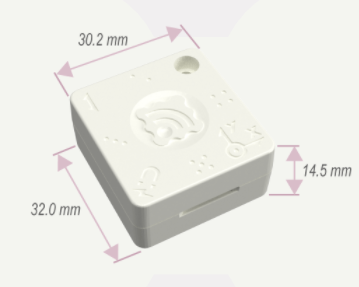
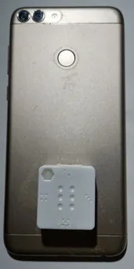
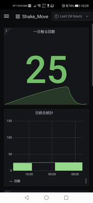

長時間動作
CR2032コイン型電池を利用し、1分に1度の定期送信の場合、約2年という参考値が示されています。
小型無線センサー（TWELITE CUE）を実際のセンサーとして使用し、モノの状態を無線で取得するIoTシステムを検証しました。
小型無線タグだけでなく、USBスティックを用いた受信、データ収集・処理、可視化までを組み合わせ、IoTシステムとしての構成を実際に確認しました。
センサーから取得した情報を無線で受信し、PC側でデータを収集・処理することで、現場の状態を継続的に把握できる構成を検証しています。
また、センサー単体の動作確認にとどまらず、取得したデータを蓄積し、状態を確認できるところまで一連のシステムとして構築しました。

実際に使用した小型無線センサー
USBスティックをパソコンに接続して親機として利用し、無線センサーから送信されたデータを収集する構成を検証しました。USB給電による中継機の構成も確認しています。
実際にセンサーを対象物へ取り付け、状態を取得する検証を行いました。センサーから無線で送信された情報を受信し、収集したデータを処理して、状態を確認できる形まで可視化しました。

実機を対象物に取り付けて行った検証

実際に構築・検証したデータ可視化画面
実際の検証の様子を動画でも紹介しています。
CR2032コイン型電池を利用し、1分に1度の定期送信の場合、約2年という参考値が示されています。
スーパー、工場、倉庫、事務所など、モノの状態を把握したいさまざまな現場への活用を検討しました。
小型無線センサー、USBスティック、既存のPC・サーバー環境を組み合わせた構成を検証しました。
無線センサーによる現場データの取得・収集・可視化という経験を基盤に、現在はRaspberry Pi、TWELITE、Cloudなどを組み合わせたIoTシステムの技術検証へ発展させています。